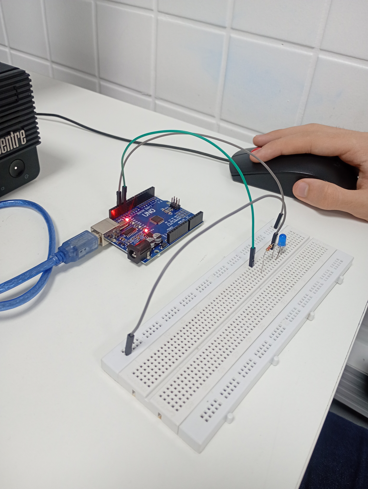
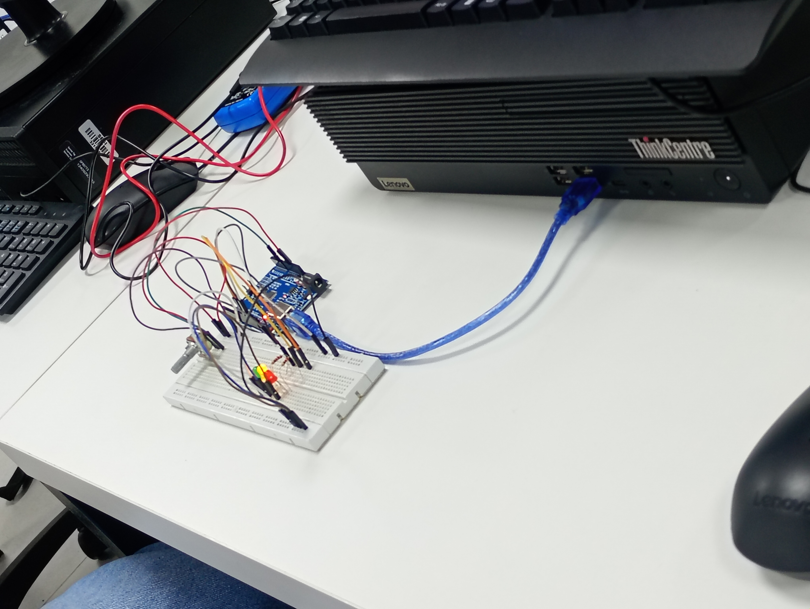

O que é?
O Arduino é uma plataforma de prototipagem eletrônica de código aberto (open source), formada por uma placa com microcontrolador e um software (Arduino IDE) usado para programá-la.
Ele permite criar e testar projetos eletrônicos de forma simples, mesmo para iniciantes.



Para que serve/
aplicações
O Arduino serve para controlar dispositivos eletrônicos automaticamente, lendo informações do ambiente (sensores) e reagindo a elas (atuadores).
Algumas aplicações comuns:
- Estações meteorológicas (temperatura, umidade, chuva)
- Robôs e carrinhos autônomos
- Automação residencial (controle de luzes, portões, irrigação)
- Projetos educacionais de eletrônica e programação
- Alarmes e sistemas de segurança
- Protótipos automotivos (controle de motores, sensores de distância)
Vantagens
- Fácil de programar com linguagem simples baseada em C/C++
- Grande variedade de sensores e módulos compatíveis
- Comunidade ativa e tutoriais disponíveis
- Baixo custo e acessível para estudantes
- Open source, ou seja, livre para modificar e compartilhar
Desvantagens
- Baixo poder de processamento (limitado para projetos muito complexos)
- Pouca memória comparado a microcontroladores avançados
- Velocidade menor que placas como Raspberry Pi
- Dependência de hardware externo para funções específicas (Wi-Fi, Bluetooth, etc.)